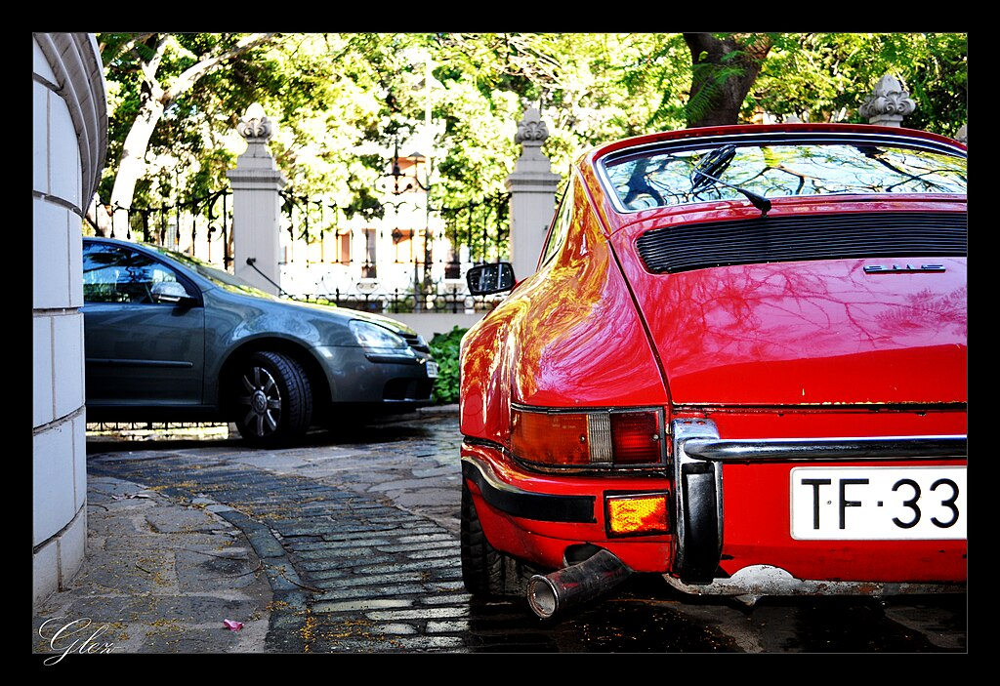
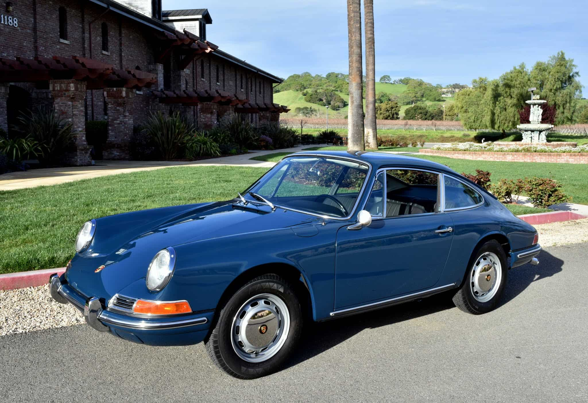

Porsche 901 1964
Estaba equipado con un motor tipo bóxer de seis cilindros situados en el mismo plano horizontal de 1991 cm³ (2 litros), montado debajo del capó trasero. Su arquitectura, combinada con un sistema de refrigeración por aire, era una solución técnica que estaba basada en el motor del Porsche 356 con un bloque de cuatro cilindros también bóxer, que produce un sonido único e inconfundible y que contribuiría en gran medida a forjar su imagen. Después de algunos desarrollos notables, dirigidos principalmente a aumentar la potencia, el par y mejorar la carburación, Porsche revisó su Flat 6 en profundidad para optimizarlo y darle más potencia, la cual en todos los modelos de la gama se vio incrementada en 10 CV (7,4 kW) adicionales. La transmisión manual de 5 velocidades del 901 estaba equipada con un cárter de magnesio.
Porsche 911 S
El nombre de la variante "S" la recibió por Súper y fue el primer 911 de la historia en incorporar las llantas Fuchs, las cuales eran 2,3 kg (5,1 libras) más livianas que las de acero que escondían los primeros frenos reforzados con discos ventilados en un vehículo de producción.

Porsche 911 T
El 911 T (Touring) pasó a ser el modelo básico. La caja manual era de cuatro velocidades, siendo opcional la de cinco y el motor se abarató con culatas de hierro fundido, un cigüeñal más simple y carburadores Weber 40IDT3C, que eran más pequeños. Igualmente se redujo el coste al suprimir las barras estabilizadoras delanteras y traseras, así como usar frenos de disco convencionales.

Porsche 911 L
El 911 L de "Lux" o "Luxury" fue un cambio en el nombre, pero no en su motor de 1991 cm³ (2 litros) sin mayores modificaciones. Su carrocería acogió parabrisas negros, además de unos marcos de las ventanillas en aluminio pulido y un espejo retrovisor más grande, llantas de serie de 14 pulgadas (35,6 cm) de acero.

Porsche 911 E
En cuanto al 911 E, era por su designación "Einspritz" que significa inyección en alemán. Se redujo el peso gracias a su motor era más liviano, que a su vez provocó que la distribución de peso también mejorara, pasando de 41,5% a 43% delante y de 58,5% a 57% detrás, además de que adoptó amortiguadores hidroneumáticos auto nivelados desarrollados por Boge.

Un año después de la presentación del primer 911 de la historia llegó el 912, una versión económica cuyo aspecto era idéntico, pero su precio era más barato. Surgió para situarse por costo entre el 911 y el 356, equipando el bloque de cuatro cilindros bóxer del 356 SC de 1582 cm³ (1,6 litros), que bajó su potencia de 95 a 90 CV (70 a 66 kW) para una mayor tracción, por lo que era menos potente, pero también más ligero y con un mejor equilibrio que el modelo de seis cilindros. Con todo lo anterior, seguía manteniendo unas prestaciones respetables al acelerar de 0 a 100 km/h (62 mph) en 11,6 segundos y una velocidad máxima de 185 km/h (115 mph).
El 911 R surgió gracias a la idea de querer un vehículo superior a los de la competencia en cuanto a relación peso a potencia. Se le añadió la R de Racing y el peso total quedó en solamente 800 kg (1764 libras), es decir, 230 kg (507 libras) menos que la versión estándar. Para ello se utilizó la fibra de vidrio para los parachoques, la tapa delantera, las puertas y las aletas frontales, el cristal del parabrisas se redujo y el resto de lunas se fabricaron en plexiglás.